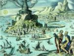

De: La Frikipedia, la enciclopedia extremadamente seria.
De: La Frikipedia, la enciclopedia extremadamente seria. De: La Frikipedia, la enciclopedia extremadamente seria.
| De la serie Países del planeta tierra: | |||||
| Ελλάδα | |||||
|---|---|---|---|---|---|
| |||||
| Lema: Χρονια και χρονια! | |||||
| Himno: Nací en el Mediterráneo.
| |||||
| 
| |||||
| Capital | Solo son ciudades sin unificarse | ||||
| Mayor ciudad | Atenas | ||||
| Lenguas oficiales | Griego, hebreo y latín | ||||
| Gobierno | Politeísta | ||||
| Dios supremo | Zeus | ||||
| Área | De agua e islas | ||||
| Población | Casi esta desabitado | ||||
| Moneda | EYPΩS | ||||
| Zona horaria | GTM -2 | ||||
| Dominio Internet | .culo | ||||
| Código telefónico | 00salsiki
| ||||
| El yogur más bueno del mundo. | |||||
Es un País ubicado en algún lugar del Mediterráneo poseedor de quien sabe cuantas cientos de miles de millones de islas inexploradas y un idioma extremadamente raro y difícil de entender.
Se le considera la raíz vertiginosa de la cultura decadente occidental, además de ser considerado por los expertos en economía como un hoyo negro perdido en el mediterráneo habitado por seres que comen, cagan, copulan, hablan, destruyen, ven, escriben y se esconden en el voluptuoso y sagrado mármol. Por consiguiente no merece atención alguna más que... no sé pero debido al razonamiento previo podemos concluir que su excremento debe ser blanco y liso pero a la vez muy pulcro, dando así una ofrenda para sacrificar a los dioses.
Enterradme sin pena decía griego meloso que deseaba ansiosamente copular con el cuarzo del reloj de su patrón.
Hace 4 milenios antes de la llegada de los hombre castor a la quinta luna de Jupiter existía una raza de hombres idiotas que les gustaba copular con ovejas o piedras en vez de fecundar a sus esposas por lo que rara vez se multiplicaban, sin embargo su número era cuantioso, ya que el titán Prometeo se gasto las ganas haciéndolos a base de tierra, barro, bosta de animal y ramitas pero a pesar del cariño hacia su obra, no dejaban de ser idiotas y luego de copular con piedras esparcían su semen al mar, tal acto poco higiénico molesto al Dios primordial de los mares Poseidón que decidió exterminar a esa raza de hombres idiotas con un diluvio, que es algo así como un tsunami gigante que elimina toda clase de evidencia para que C.S.I no pueda notar que los dioses olímpicos o grecos evaden impuestos.
Luego de tener el permiso de Zeus, Dios de los cielos y ente supremo que lidera y forma parte de la triada de los hermanos primordiales que es algo así como el punto máximo que un narco o mafioso querría estar, empezó a caer lluvia. Deucalión y su esposa Pirra mediante negociados logran salvarse. Después tiran piedritas dando a luz a todos los pueblos que conformaban Grecia. Eso explica porque les gusta copular con piedras.
Empiezan a surgir reinos pequeños que luego mediante variaciones genéticas, problemas de deudas y configuraciones en japonés terminarían como democracias populares, oligarquías, monarquías, diarquías, tetrarquías y todo lo que termina en quía. Ambición, dinero y todo eso hace que las ciudades estado porque su área no era lo bastante grande como para llamarle país estándar.
Como estás ciudades se destruyeron entre sí sin dejar rastro se le llamo período oscuro o de estancamiento que duro mucho tiempo.
Los persas tratan de invadir la hélade mediante mercenarios profesionales de la salud que aunque tuvieran batas blancas no pudieron hacer frente a los griegos que los echaron dos veces sin remordimiento de haberse quedado sin sistema de salud pago. Estas invasiones se las llamó obviamente guerras médicas. Después de tanta paz los griegos vuelven a rearmarse para matarse entre sí nuevamente y lo logran ventajosamente a tal punto de que Phillip II of Macedonia al cruzar las estepas y ver lo que había quedado de Grecia dijo unas palabras emotivas:
«Están ma jodío que nosotro ataque entoce»
~ Phillip II al aniquilar a la resistencia tebana en Queronea
Los griegos quedaron sometidos bajo dominio de Macedonia que logró crear un imperio enorme que borró del mapa a los persas y abrió nuevos mercados para vender Yogurt como la India. Después el imperio se dividió entre los generales del Gran Alejandro y estos se la rebuscaron en seguir la tradición griega de matarse entre ellos mismos, tal acción fue aprovechada por Roma que los arraso sin piedad pasaron a dominio latino, si latino. Después aparecieron los ortodoxos, los venecianos, los turcos y sus bazares hasta que finalmente las potencias europeas para joder al Imperio Otomano justificaron una guerra por la independencia de Grecia la cual la consiguió de ahí que empezó a expandirse y para el fin de la guerra mundial Grecia había duplicado su territorio base aunque después tuvo que devolver algunos, sin embargo al final terminó saliendo ganando mientras los turcos se desangraban por la desintegración del Imperio Otomano.
La política griega sufre un revés cuando miembros de taka-taka derechista derrocan al rey e imponen un gobierno de coroneles que duraría unos cuantos años hasta que se impusiera una república que rige actualmente bajo el peso de acreedores financieros de otros países. Se cree que estos acreedores podrían hacer desaparecer en un segundo dos milenios de historia griego con tal de que se pague la usura controvertida utilizada.
Grecia esta ubicada entre las costas del Mar Mediterráneo y del mar de Japón se encuentra a quien sabe cuantos millones de grados de Brasil y, según dicen, esta cerca de Italia y Turquía.
Grecia es poseedora de millones de billones de kilómetros de praderas salpicadas por algunas montañas, desiertos y lagos. Tres planetas giran alrededor de su orbita y es poseedora de 8 o 9 lunas del tamaño de Egipto.
La población de Grecia se simplifica en:
La economía de Grecia se basa principalmente en la exportación de peces espada, Delfines, antigüedades, soldados, islas paradisíacas y filósofos. La economía de la mayoría de la población se basa en el cultivo de coca y pinos, de los cuales sacan la mayoría de sus alimentos y la parte restante de la población se dedica a la caza de calamares gigantes y monstruos marinos ricos en calcio y vitamina C.
Los griegos poseen una cultura autóctona debido a que nadie les entendía lo que querían decir.
Los griegos son grandes compositores de música que crean con cacerolas, piedras y palitos, logrando asi un sonido armonioso con el cual halagan a sus dioses.
No se especializaban mucho en esto, pero lograron grandes obras de arte pintándose las manos y los pies con pintura y frotándolas por hojas y piedras planas.
Estaban altamente especializados en esto, ya que para las cosas mas insignificantes (un quiosco por ejemplo) erigían enormes edificios de piedra sólida que pesaba millones de toneladas. Pero, absolutamente toda su arquitectura vino mal de fabrica, ya que estaba tan mal construida que siquiera fue capaz de aguantar algún que otro milenio sin deteriorase o derrumbarse.
Los griegos fueron bastante ingeniosos en este tema, ya que al igual que con la arquitectura creaban para cada cosa insignificante un Dios, ya que había dioses del agua, fuego, tierra y hasta de los zapatos que utilizaban cada día. Veasé Los Dioses Griegos
Los griegos son grandes deportistas, ya que ellos nunca descubrieron el teléfono y tienen que correr a todos lados para dar sus mensajes.
Grecia ha creado los mayores corredores que son capaces de correr miles de kilómetros a años luz de distancia en hojotas con los ojos atados y mientras la superficie esta en llamas.
Debido a la cantidad de islas que tiene y la pobreza de los habitantes que no son capaces de tener un barco, los griegos son nadadores sobresalientes llegando al punto tal de que algunos han llegado a tener branquias en lugar de pulmones y aletas en lugar de brazos.
Se caracteriza por un furbo de media calidad, capaz de ganar un torneo internacional a nivel selección una vez cada varios cientos de años y con un fútbol local en el cual hay mas jugadores extranjeros que nacionales.
  Imperios de Europa Imperios de Europa
|
|---|
| Eslovaquia |
Autor(es):